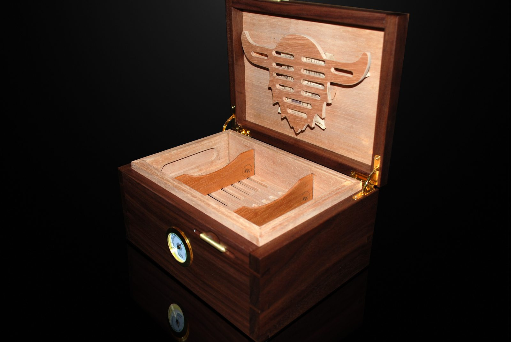

Habanos' own range is 65–70%. Swipe for what each number means, why temperature matters, and how to hold 65% through a northern winter →
Habanos publishes 65–70%. Our storage guide explains why we keep Cuban cigars at the low end of it.
Too much moisture swells the filler and can split the wrapper; too little leaves it brittle. Staying inside Habanos' range avoids both.
Humidity moves with temperature, so Habanos says to keep it steady. Use the coolest room in the flat, away from the radiator and the window.
| 01 | Two-way packs at 65, not sponges. Add a pack if the reading drops in winter. |
| 02 | Season a new humidor before a single cigar goes in. |
| 03 | Keep the dress boxes closed inside the humidor. Two layers of cedar, two buffers. |
| 04 | Open the lid less. Every opening lets dry winter air in. |
| 05 | A calibrated hygrometer inside, where the cigars are. |
Heated flats in a northern winter are very dry, and a wooden humidor loses moisture through its walls.
Boveda says even a calibrated hygrometer is accurate to about ±3–5%. Measure inside the box, where the cigars are.
How to store Cuban cigars: why 65%, not 70%, and how to calibrate your hygrometer. Link in bio. We don't sell tobacco.